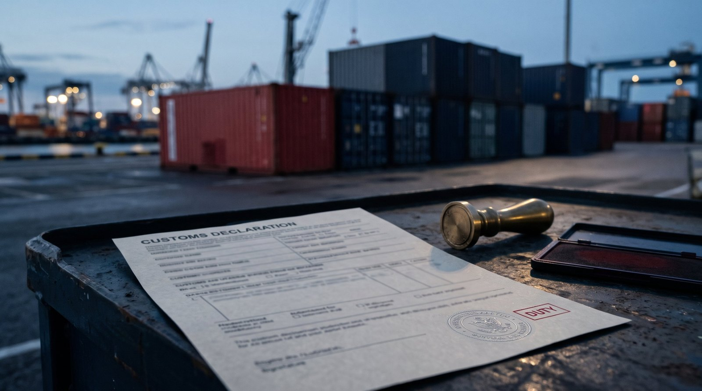
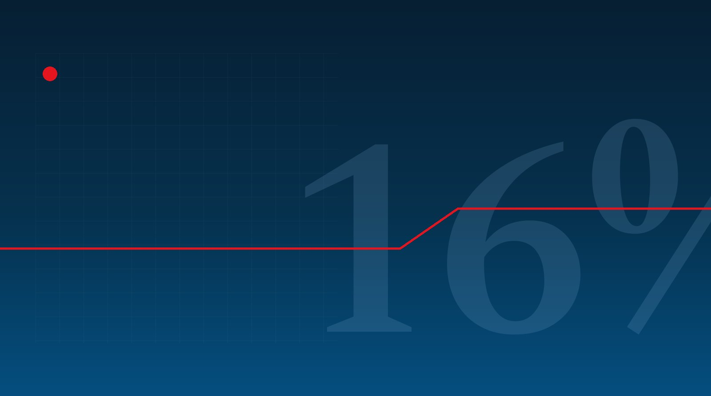
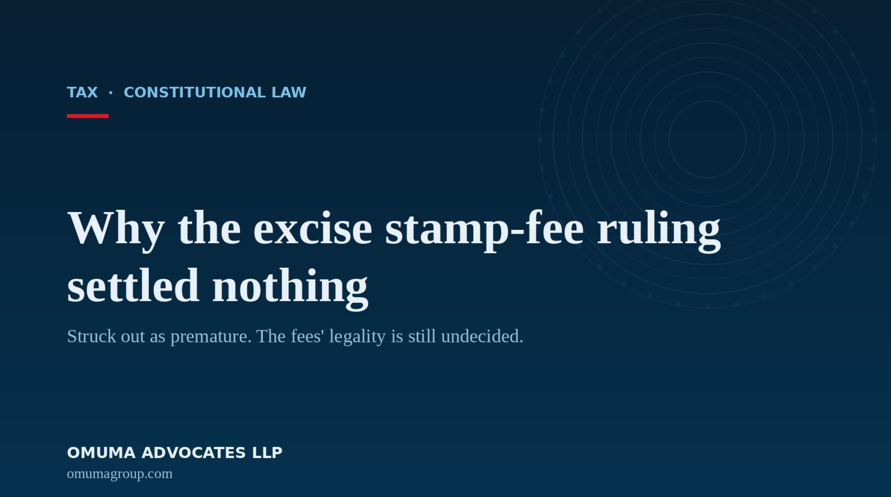
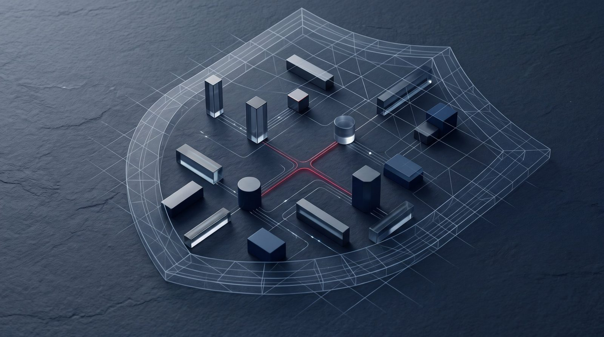

Insights
Insights and analysis.
Legally insightful, financially astute notes on new and pending legislation and fresh case law in our fields.
Latest
Notes on the law that moves our clients.
The developments we are watching in our fields, with our read on what each one means for the businesses and people we act for.
Riba and proof: why a bank recovered only what it lent
A bank sued on an Islamic financing facility and the borrower never defended it. The bank still recovered only its principal, no profit and no interest. Why a Shariah-compliant facility is enforced on its own terms.
Read the analysisNovember 2026
A government promise is not a tax exemption
A contractor built part of the Nairobi Expressway on the Treasury’s promise to carry the tax, and was told to pay it anyway. A factory kept the exemption the taxman itself had issued. Two decisions draw the line between the two.
Read moreWho controls Nairobi’s skyline: the Supreme Court draws the line
The policy Nairobi used to approve its high-rise towers was never passed into law, yet the towers stand. The Supreme Court resets what a county must do before it can zone, and what a neighbour must prove to stop a build.
Read moreWhen an insurer loses its licence, what happens to your cover
When the IRA cancels an insurer’s registration, your cover and your claim are not erased. The section 196 run-off, the capital trigger, statutory management, the compensation fund cap, and the liability directors carry.
Read more
The taxman’s word: why a customs demand could not come back from the dead
The Court of Appeal struck down a Sh45 million customs demand because the Commissioner had promised to drop it and apply any later tariff change only to future imports.
Read moreWhy Quickmart’s own founders were turned away from its IPO
Quickmart’s IPO was oversubscribed, and its own founders were allocated nothing while the retail public got every share. How the law makes a company set the allocation policy that decides who gets in.
Read moreWhy a Kenyan clearance does not finish a cross-border bank deal
The CBK and the Treasury cleared Access Bank’s purchase of National Bank of Kenya, yet NBK sits off the buyer’s books because its home regulator has not finished. What the home-host problem means here.
Read moreWhen public land became private: the title the NLC can reopen
The National Land Commission can once again reopen titles that began as public land. Why the new bona fide purchaser shield is thinner than it looks, and why the root of a title now decides its safety.
Read moreWhy a broken occupation sinks an adverse possession claim
Long occupation of another’s land can ripen into ownership under Kenya’s adverse possession doctrine, but only if it is never interrupted. Why continued possession, not time alone, is what the law protects.
Read moreA duty to police, with no safe harbour: the legal holes in the draft platform rules
Kenya’s draft platform Bill would make every online operator police and report its users, with no safe harbour and a criminal penalty behind it. The legal holes in the new section 85C.
Read moreA power the Act did not give: the vires question in the draft trust rules
Kenya’s draft Trust Administration Regulations would let a trustee freeze a beneficiary’s distributions for non-disclosure, and whether a regulation can lawfully do that is the real question.
Read moreA grant and a loan to 2048: the finance behind Kenya’s first grid batteries
KenGen has secured about 10.5 billion shillings for Kenya’s first grid-scale battery storage, almost all of it a climate-fund grant and a concessional World Bank loan to 2048.
Read moreCBK says 2029, the Treasury says 2032: which bank capital deadline binds
The Central Bank has told banks to ignore the Treasury’s move to push the Sh10 billion capital deadline to 2032. On the record so far, the statutory deadline binds.
Read moreNew capital rules for Kenya’s biggest banks
The Central Bank wants systemically important banks to hold more capital. Its prudential and risk rules are out for comment until Friday 7 November.
Read moreA valid charge is not enough: when a botched auction makes the lender the debtor
The Court of Appeal confirms a bank with a valid charge can still be ordered to pay its defaulting borrower, if it cannot prove it served the statutory notice and sold at a fair price.
Read moreA trust in a drawer no longer counts. Kenya’s new trust law, and the two-year clock.
Every written trust must now be registered or incorporated, or a court will not enforce it, and existing trusts have until September 2028 to comply.
Read more
Payment fees now carry 16% VAT. The taxman lost in court, so the law changed.
The Finance Act 2026 stripped the VAT exemption from the fees payment providers, gateways and banks charge to process your money, undoing by statute a run of cases the taxman had just lost.
Read moreNo local marine cover, no clearance. The rule is not new; the enforcement is.
From 1 November, KRA blocks any import from clearing customs without marine cargo insurance from a Kenyan-licensed insurer. The real catch is in your sale contract.
Read moreAirtel listed its mobile money arm to settle a promise, not to raise money
Its London float raised nothing for the company. It was there to give 2021 minority investors their exit and lift a $515 million put option off the balance sheet.
Read more
Why the excise stamp-fee judgment settled nothing
The High Court struck the Law Society’s challenge to the higher excise stamp fees out as premature, deciding nothing about whether the fees are lawful.
Read moreOctober 2026
Kenya is rewriting the payments rulebook. Here is what it means for you.
The draft National Payment System Bill, 2026 would replace the regime that has governed mobile money and card payments since 2011, handing the Central Bank sweeping new powers, mandating open finance, and ring-fencing customer money.
Read moreCrypto’s compliance clock: the 4 November VASP licensing deadline
Existing virtual asset firms have until 4 November 2026 to get licensed under Kenya’s new regime.
Read more
A wider net for lenders: the Non-Deposit Taking Credit Providers Regulations, 2026
New rules extend Central Bank oversight beyond digital lenders to asset finance and buy-now-pay-later.
Read moreForeign lenders keep their day in court: Rabobank v Mwangi
The Court of Appeal holds that non-registration does not, by itself, bar a foreign lender from enforcing its loan in Kenya.
Read moreStay informed
Legal insights, in your inbox.
Notes on new legislation and fresh case law in our fields, now and then. No spam, and you can leave any time.